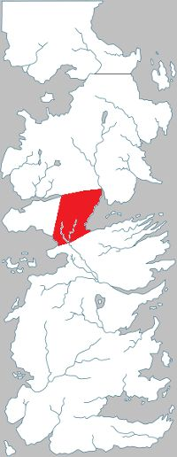

Neck
The Neck is a region of Westeros covered in swamp and bog. It divides the south of the continent from the north. It is inhabited by the crannogmen.
There, one can find huge flowers, lizard-lions and many snakes. The trees are half-drowned, covered in fungus and beneath the water, quicksand that will drown anyone who attempts to walk the waters. The Neck is considered the key to any assault on the North.
The Neck was originally an independent kingdom ruled by the Marsh Kings, until Rickard Stark, the King In The North, defeated the last Marsh King and married his daughter, annexing the Neck to the domain of the Kings of Winter.
Map on Next page.
